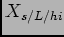
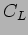
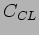

A set of standard execution models was generated:-these belong in
| ||||||||||||||||||||||||||||||||||||||||||||||||||||||||||||||||||||||||||||||||||||
Description of various characterisation simulations.
|
[Trend of average value of demand profile for available ODB dataset]

[Trend of peak value of demand profile for available ODB dataset]
|
|
[Trend of nightly number of groups executed for available ODB dataset]
[Trend of nightly load  and  for available ODB dataset]
[Trend of nightly weighted load and for available ODB dataset]
|